Sumário
Comece aqui
O essencial
- 3Seu WhatsApp responde na hora, mesmo com você na obra
- 4Nenhum cliente esquecido no WhatsApp
- 5Orçamento certo de primeira, sem calculadora
- 6O cliente aprova respondendo “1”
- 7Visita de medição marcada sem vai-e-vem
- 8Seu dia inteiro numa tela só
- 9Todos os orçamentos à vista, do “oi” ao fechado
- 10Sua tabela de preços pronta em 8 passos
Também importante
- 11Responda “quanto fica?” antes de medir
- 12Nada sai para a obra sem conferência
- 13Equipe certa, no dia combinado com o cliente
- 14Pós-venda com começo, meio e fim
- 15A história de cada cliente num clique
- 16Sua margem protegida em todo orçamento
- 17Mensagem automática só em horário comercial
- 18Cada um da equipe com o seu acesso
- 19O nome da sua vidraçaria em cada mensagem
Cadastros de apoio
Para fechar
Anexo
Em 1 minuto
O VidraTX organiza a vidraçaria do pedido no WhatsApp até a instalação. Ele atende o cliente, calcula o orçamento, manda para aprovação, marca medição e instalação e acompanha a produção.
É feito para vidraçarias de pequeno porte: o dono, quem vende, quem mede e quem instala usam o mesmo painel, cada um com o seu login. Funciona no navegador, no computador ou no celular.
As 3 dores que ele resolve
“O cliente chama no WhatsApp e eu só vejo à noite.”
O atendimento automático responde na hora, pega nome, serviço, medidas e fotos e deixa a solicitação pronta para você orçar.
“Faço o orçamento na calculadora, erro a folga e esqueço a ferragem.”
O cálculo automático usa a tipologia, desconta a folga e gera as peças de corte. O vidro sai pelo m² da sua tabela, e o kit e a ferragem que você escolher entram com o seu preço.
“Marcar visita e cobrar resposta toma o meu dia.”
Orçamento e datas vão pelo WhatsApp, com resposta por número. O sistema lembra o cliente sozinho e mostra de quem é a vez.
Primeiros passos
Do acesso ao primeiro orçamento enviado, em 5 passos.
-
Entre no painel
Você recebe o endereço do painel, o identificador da sua vidraçaria, o e-mail e a senha.
Entre com os três. Troque a senha no ícone de chave, no topo da tela.
Tela “Entrar”
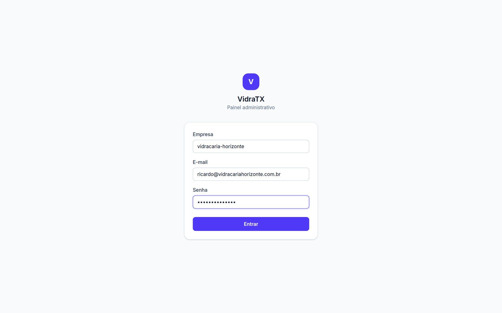
01-login.jpg · Tela “Entrar”: identificador da empresa, e-mail e senha. - Monte sua tabela de preços Clique em Configuração Expressa e siga os 8 passos: m² do temperado, cores, espelho, box instalado, visita, regime e margem. Menu › Tabela de Preços › Configuração Expressa
- Conecte o WhatsApp da vidraçaria Clique em Conectar WhatsApp e escaneie o QR code com o celular da empresa. A partir daí, o atendimento automático já responde seus clientes. Menu › Configurações › WhatsApp
- Crie o orçamento Cadastre o cliente com o WhatsApp (ou use a solicitação que chegou pelo atendimento). Clique em Novo orçamento e em Adicionar item: tipologia, vão e vidro. Em Adicionar, escolha o kit e a mão de obra da sua tabela. Menu › Orçamentos › Novo orçamento
- Revise e envie O gerente confere os valores (ou clica em Aceitar todas). Arraste o card para Orçamento final e clique em Enviar orçamento pelo WhatsApp. Orçamentos › abra o orçamento O botão de envio só aparece na etapa Orçamento final, e é arrastando o card no funil que o orçamento chega lá.
Seu WhatsApp responde na hora, mesmo com você na obra
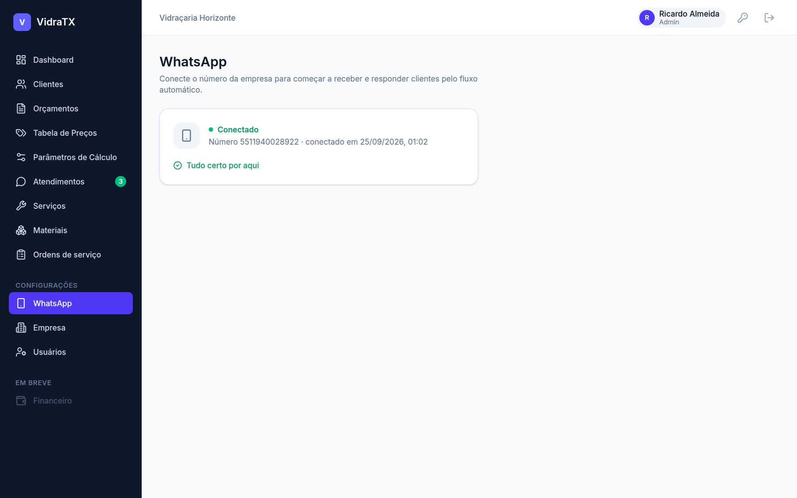
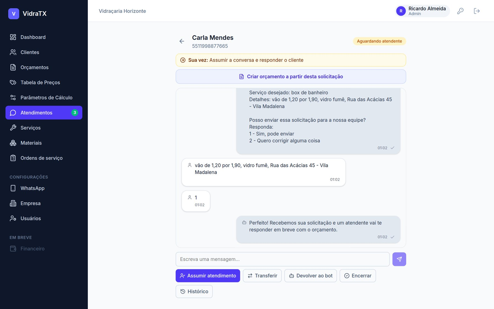
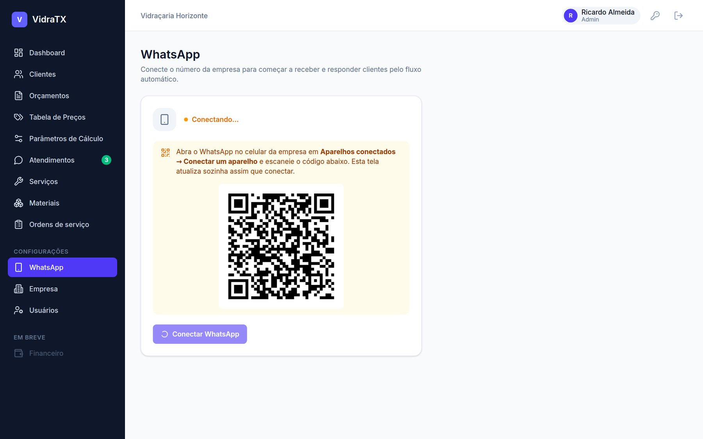
- No topo da tela WhatsApp: selo Conectado, com o número e a hora da conexão.
- Logo abaixo: “Tudo certo por aqui”, ou o aviso de mensagens na fila e não entregues nos últimos 7 dias.
- Na conversa: as perguntas do atendimento automático (à direita) e as respostas do cliente (à esquerda).
- No topo da conversa: Criar orçamento a partir desta solicitação.
Para que serve: atender na hora todo cliente que chama no WhatsApp e deixar o pedido pronto para orçar.
Como usar
- Abra Configurações › WhatsApp e clique em Conectar WhatsApp.
- Escaneie o QR code no celular da empresa: WhatsApp › Aparelhos conectados › Conectar um aparelho.
- Deixe o atendimento trabalhar: ele pede o nome, cadastra o cliente e coleta serviço, medidas aproximadas, endereço e fotos.
- Abra a Visão geral e, na solicitação que chegou, clique em Criar orçamento.
- Assuma a conversa quando quiser: responda pela tela Atendimentos.
Peça a foto do vão com a trena aparecendo. A foto vai junto com a solicitação e aparece no orçamento.
Áudio o sistema ainda não ouve. O próprio atendimento pede para o cliente escrever.
O cliente é respondido na hora, até à noite e no fim de semana. Você começa o orçamento com nome, serviço e fotos na mão, sem perguntar tudo de novo.
Se o cliente pede uma pessoa, ou o atendimento não entende, a conversa vai para a sua fila.
Nenhum cliente esquecido no WhatsApp
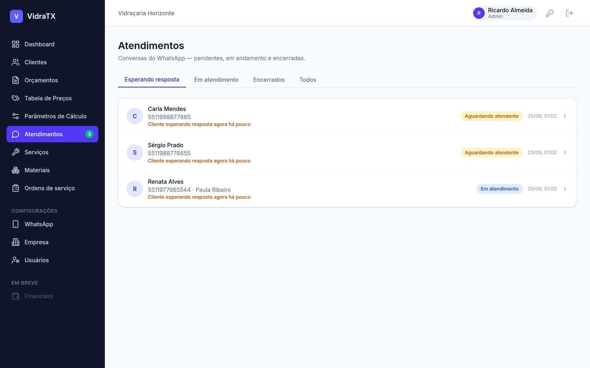
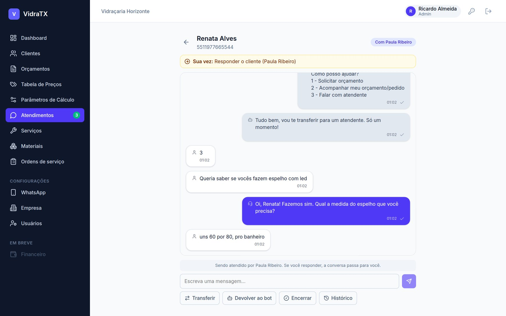
- No menu: o número verde ao lado de Atendimentos mostra quantos clientes esperam uma pessoa.
- No topo da lista: abas Esperando resposta · Em atendimento · Encerrados · Todos.
- Em cada conversa: quem está atendendo e o aviso laranja “Cliente esperando resposta”.
- Na conversa aberta: o selo “Com Paula Ribeiro” diz quem assumiu. Embaixo, o campo “Escreva uma mensagem…”.
- Rodapé: Transferir · Devolver ao bot · Encerrar · Histórico (e Assumir atendimento quando ninguém assumiu ainda).
Para que serve: mostrar quem está esperando uma pessoa e deixar qualquer um da equipe responder dali.
Como usar
- Abra Atendimentos e clique na conversa que está esperando.
- Clique em Assumir atendimento, ou simplesmente responda: ao responder, você assume.
- Escreva e clique em Enviar. A mensagem sai pelo WhatsApp da vidraçaria.
- Passe a conversa para um colega em Transferir, ou devolva ao bot.
- Encerre quando resolver. Se o cliente ainda tiver assunto em aberto, o sistema avisa antes.
Mande orçamento e datas pelos botões do orçamento, não digitados na conversa. Assim a resposta “1” do cliente volta sozinha para o sistema.
Acabou o “vi sua mensagem só agora”. A conversa não fica presa no celular de uma pessoa: a equipe toda vê a fila.
Passou do prazo que você definiu, a conversa aparece como atrasada e o cliente recebe um aviso de demora, uma vez.
Orçamento certo de primeira, sem calculadora
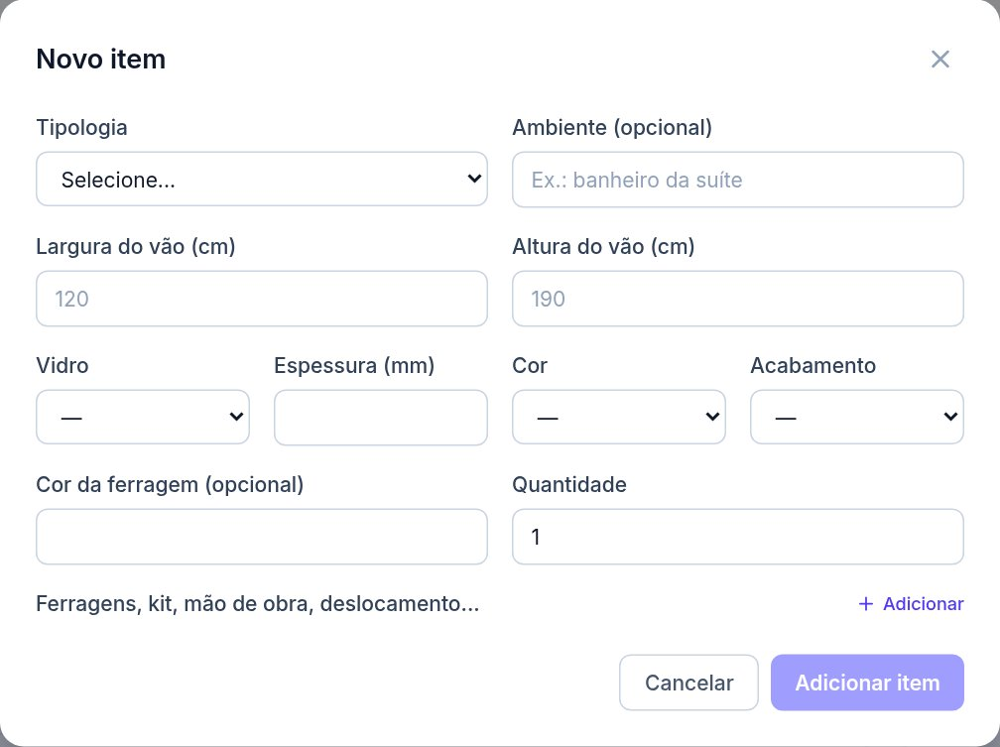
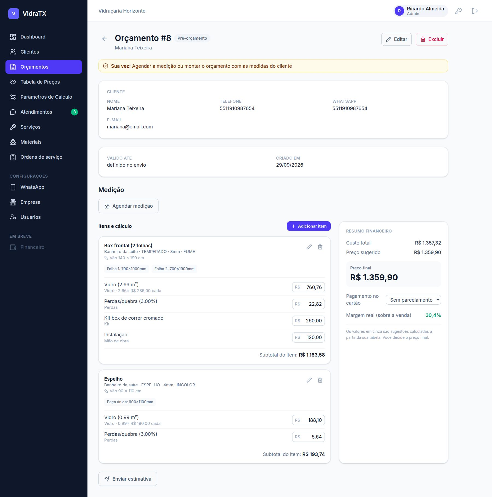
- Janela Novo item: tipologia, ambiente, largura e altura do vão, vidro, espessura, cor, acabamento e quantidade.
- No fim da janela: + Adicionar, para incluir kit, ferragem, mão de obra ou deslocamento da sua tabela.
- No item: as peças de corte já calculadas (“Folha 1: 700×1900mm”).
- Linhas de valor: vidro (m² × seu preço), perdas, kit e instalação. Cada valor pode ser ajustado.
- À direita, Resumo financeiro: preço sugerido, o Preço final, que o gerente pode fixar, e a Margem real (aqui 30,4%, em verde: acima da margem desejada).
Para que serve: transformar a medida do vão em peças, custo e preço, com a sua tabela e a sua margem.
Como usar
- Clique em Adicionar item e escolha a tipologia: box frontal, box de canto, box de abrir, espelho, porta, janela, guarda-corpo, sacada, tampo ou prateleira, vidro avulso.
- Informe o ambiente, a largura e a altura do vão (em cm), o vidro (comum, temperado, laminado ou espelho), a espessura, a cor, o acabamento e a quantidade.
- Adicione kit, ferragem, mão de obra ou deslocamento em + Adicionar, escolhendo da Tabela de Preços. Eles não entram sozinhos.
- Confira as peças de corte, os alertas e o preço sugerido no resumo.
- Peça ao gerente para revisar os valores em cinza (ou clicar em Aceitar todas) e, se for o caso, fixar o preço final com desconto ou acréscimo.
Lance a medida do vão, não da peça. O sistema desconta a folga da tipologia (no box frontal, 12 mm na largura do vão) e arredonda o corte para múltiplos de 50 mm, que é o padrão.
Box com vidro comum? O sistema avisa que box pede temperado ou laminado. Guarda-corpo pede laminado.
Em todo box, lembre de incluir o kit: é ele que cobre ferragem e roldanas.
Sem calculadora e sem caderno. A peça grande demais para a chapa é avisada antes do corte.
O vendedor não dá desconto por conta própria: preço final e valor digitado à mão ficam com o gerente.
O cliente aprova respondendo “1”
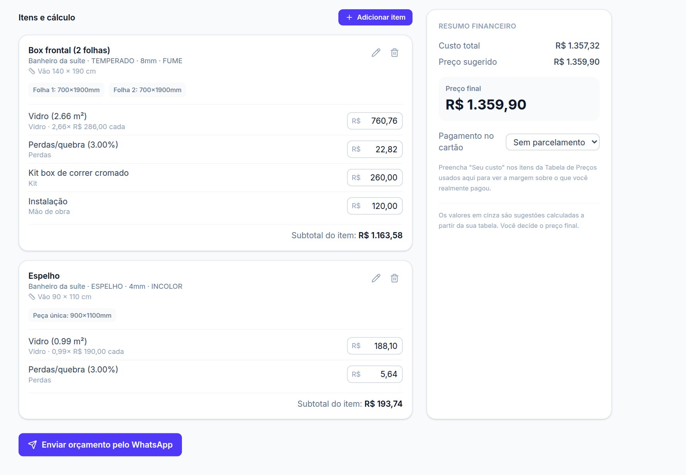
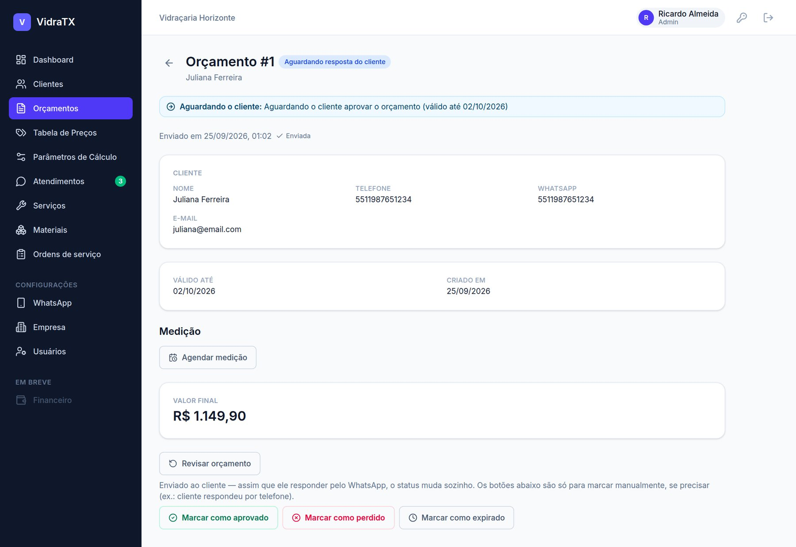
Olá, Juliana! Segue o seu orçamento nº 1 da Vidraçaria Horizonte:
• Box frontal (2 folhas) (Banheiro social) — 1200 × 1900 mm, vidro temperado 8 mm incolor
• Espelho (Banheiro social) — 800 × 1000 mm, vidro espelho 4 mm incolor
Valor total: R$ 1.149,90
Válido até 02/10/2026.
Responda:
1 - Aprovar
2 - Pedir alteração
3 - Falar com um atendente
4 - Não tenho interesse
- Embaixo dos itens: Enviar orçamento pelo WhatsApp (só na etapa Orçamento final).
- Depois do envio, no topo: a faixa azul “Aguardando o cliente”, com a validade.
- Abaixo do título: “Enviado em …” e a situação da mensagem (Enviada, Entregue, Lida).
- No rodapé: Revisar orçamento e os botões para marcar à mão: aprovado, perdido ou expirado.
Para que serve: mandar o orçamento completo e deixar o cliente aprovar, pedir alteração ou recusar com um número.
Como usar
- Arraste o card para Orçamento final, na tela Orçamentos.
- Clique em Enviar orçamento pelo WhatsApp e confirme o valor.
- Acompanhe a situação: Enviada, Entregue, Lida.
- Espere a resposta: 1 aprova e abre a ordem de serviço sozinha; 2 pede alteração; 3 chama um atendente; 4 marca como perdido.
- Revise quando precisar mudar algo: clique em Revisar orçamento e envie a nova versão. A anterior deixa de valer.
O botão fica travado enquanto faltar algo: medida do vão, vidro sem preço na tabela ou valor sem revisão. O que falta aparece em “Ainda não pode ser enviado ao cliente”.
O cliente aceitou por telefone? Use Marcar como aprovado.
Sem ligar para cobrar resposta: sem retorno em 24 horas (o padrão), o sistema manda um lembrete educado, uma vez.
Venceu a validade? O orçamento expira sozinho e o cliente é avisado. Aprovou? A OS já está aberta.
Visita de medição marcada sem vai-e-vem
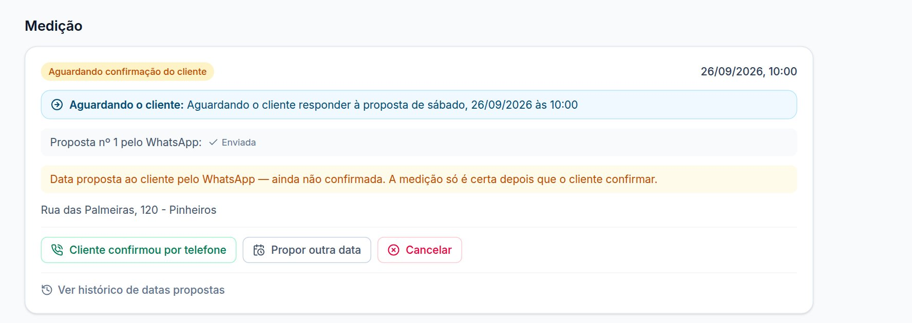
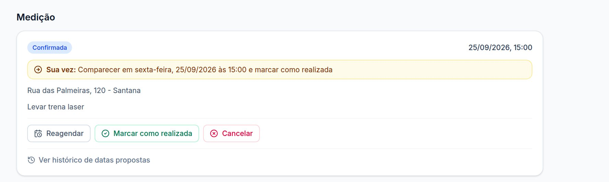
Olá, Lucas! Podemos agendar a visita técnica para medição para sábado, 26/09/2026 às 10:00, no endereço Rua das Palmeiras, 120 - Pinheiros?
Responda:
1 - Confirmar
2 - Sugerir outra data
3 - Falar com um atendente
- Selo de situação e data: “Aguardando confirmação do cliente”, depois “Confirmada”.
- Aviso laranja: a data ainda não vale até o cliente confirmar.
- Proposta esperando: Cliente confirmou por telefone · Propor outra data · Cancelar.
- Visita confirmada: Reagendar · Marcar como realizada · Cancelar.
- No rodapé do painel: Ver histórico de datas propostas.
Para que serve: combinar a visita pelo WhatsApp, com confirmação do cliente por escrito.
Como usar
- Escolha data e hora no painel Medição (e o endereço, se quiser).
- Clique em Enviar proposta. O cliente responde 1 Confirmar, 2 Sugerir outra data ou 3 Falar com um atendente.
- Responda à sugestão do cliente (“sexta às 14h”): os botões Aceitar e Recusar aparecem quando ele sugere outra data.
- Use “Cliente confirmou por telefone” quando combinar por ligação.
- Marque como realizada depois da visita.
Cobra visita técnica? Coloque o valor em Parâmetros de Cálculo. Ele vai escrito na proposta, e ninguém é pego de surpresa.
A agenda para de depender da memória de alguém, e respeita quantas medições a empresa faz ao mesmo tempo.
Proposta sem resposta vira “Precisa de nova data”. O card anda sozinho: visita confirmada vai para Visita agendada, medição feita vai para Medido.
Seu dia inteiro numa tela só
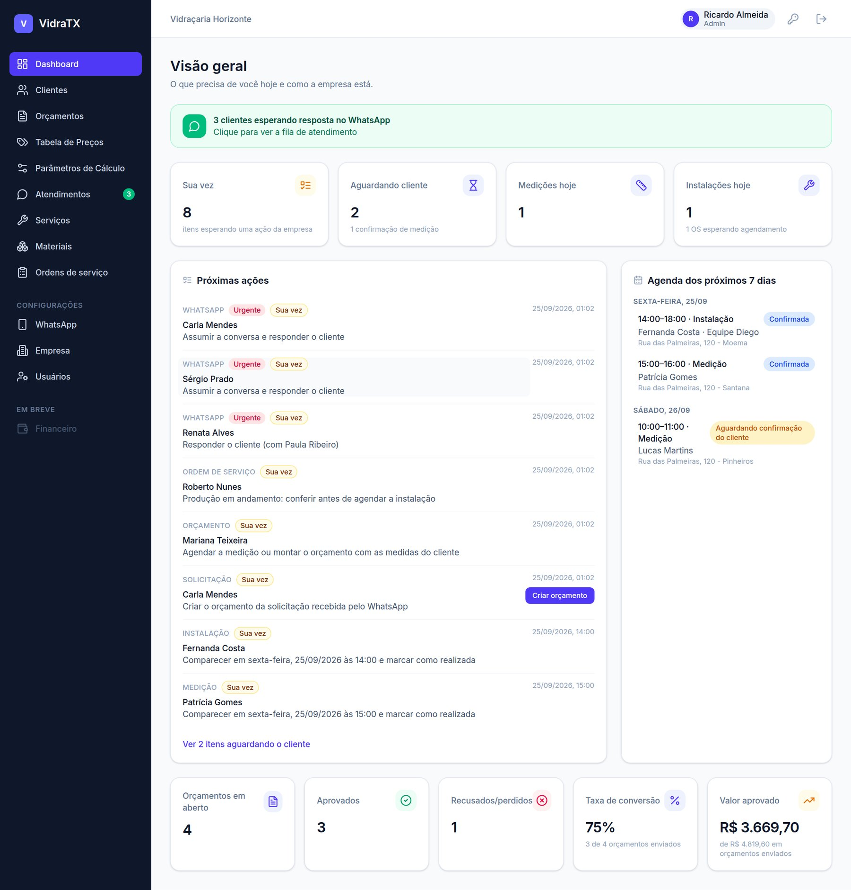
- No topo: a faixa verde de clientes esperando resposta no WhatsApp.
- Cartões do dia: Sua vez · Aguardando cliente · Medições hoje · Instalações hoje.
- À esquerda, Próximas ações: etiquetas Urgente e Sua vez, e o botão Criar orçamento.
- À direita, Agenda dos próximos 7 dias, com equipe e endereço.
- No rodapé: em aberto, aprovados, perdidos, taxa de conversão e valor aprovado.
Para que serve: mostrar o que precisa de você agora e o que está esperando o cliente.
Como usar
- Entre no painel: a Visão geral abre primeiro.
- Clique na faixa de clientes esperando para ir direto à fila do WhatsApp.
- Trabalhe as Próximas ações de cima para baixo; cada item abre o orçamento, a OS ou a conversa.
- Crie o orçamento das solicitações do WhatsApp pelo botão Criar orçamento.
- Veja quem ainda deve resposta em “Ver itens aguardando o cliente”.
Comece o dia pelo cartão Sua vez: são os itens que só andam se a empresa agir. Apareceu aviso de mensagem não entregue? Confira a conexão do WhatsApp.
Sem caderno de pendências e sem grupo da equipe para lembrar quem faz o quê. Cada item já diz de quem é a vez: da empresa, do cliente ou do sistema.
Todos os orçamentos à vista, do “oi” ao fechado
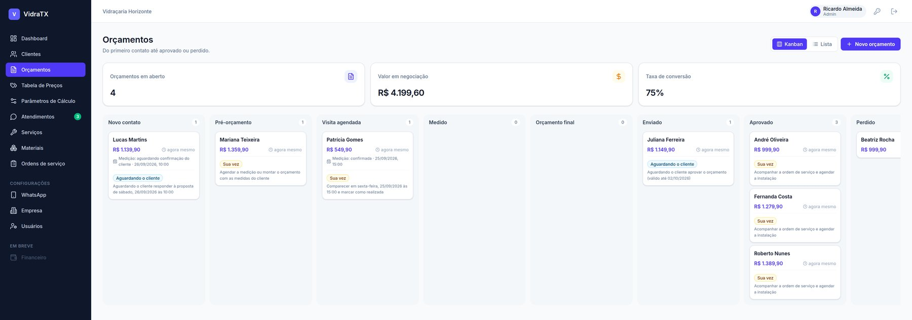
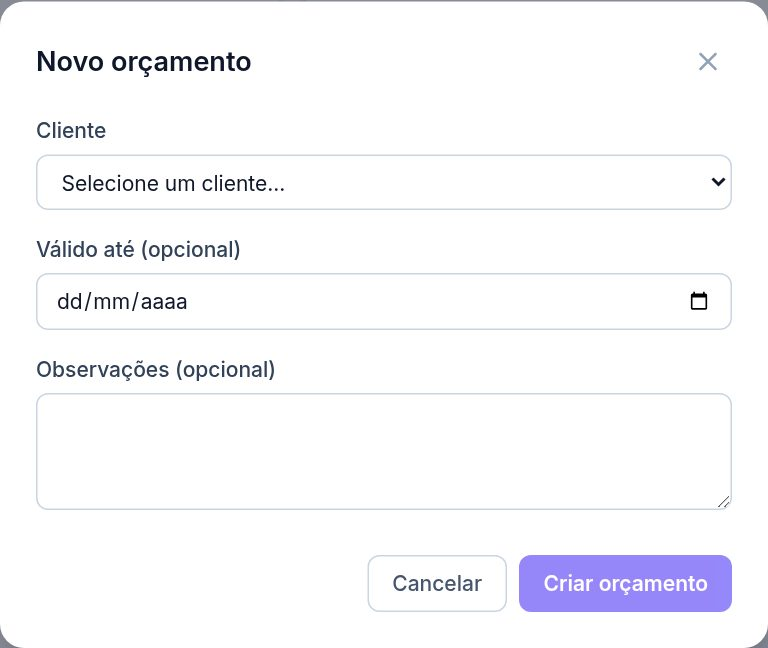
- No topo, à direita: Kanban · Lista e Novo orçamento.
- Números do funil: orçamentos em aberto, valor em negociação e taxa de conversão.
- Colunas: Novo contato, Pré-orçamento, Visita agendada, Medido, Orçamento final, Enviado, Aprovado, Perdido.
- Em cada card: cliente, valor, situação da medição e de quem é a vez. Arraste para mudar de etapa.
- Janela Novo orçamento: o cliente (obrigatório), a validade e as observações (opcionais). Os itens entram depois, dentro do orçamento.
Para que serve: ver em que pé está cada orçamento e quanto dinheiro está em negociação.
Como usar
- Abra Orçamentos e escolha Kanban ou Lista.
- Clique em Novo orçamento, escolha o cliente e, se quiser, a validade e as observações.
- Arraste o card entre as etapas de elaboração, até Orçamento final.
- Escolha o motivo ao arrastar para Perdido: preço alto, escolheu concorrente, desistiu, sem retorno…
- Filtre a lista para ver só enviados, aprovados ou perdidos.
Registre sempre o motivo da perda. Se “preço alto” aparece toda semana, é hora de olhar a margem e a tabela.
Você sabe quanto tem na mesa e quantos orçamentos viram serviço, sem planilha. E o card não vai para Medido sem a medição ter sido feita: o funil mostra o que aconteceu de verdade.
Sua tabela de preços pronta em 8 passos
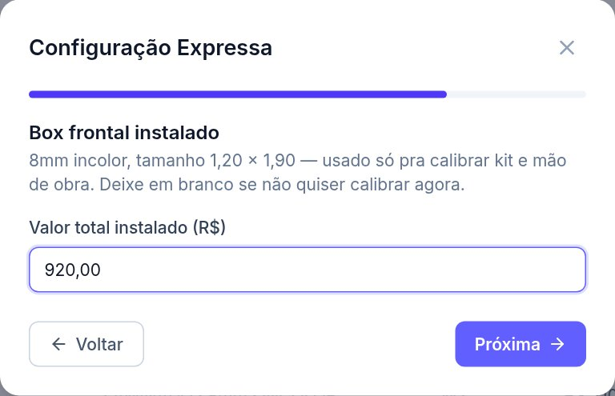
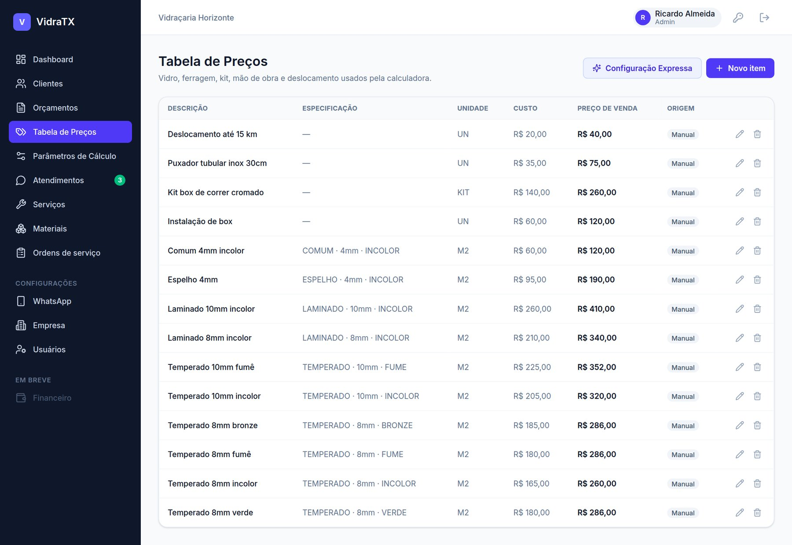
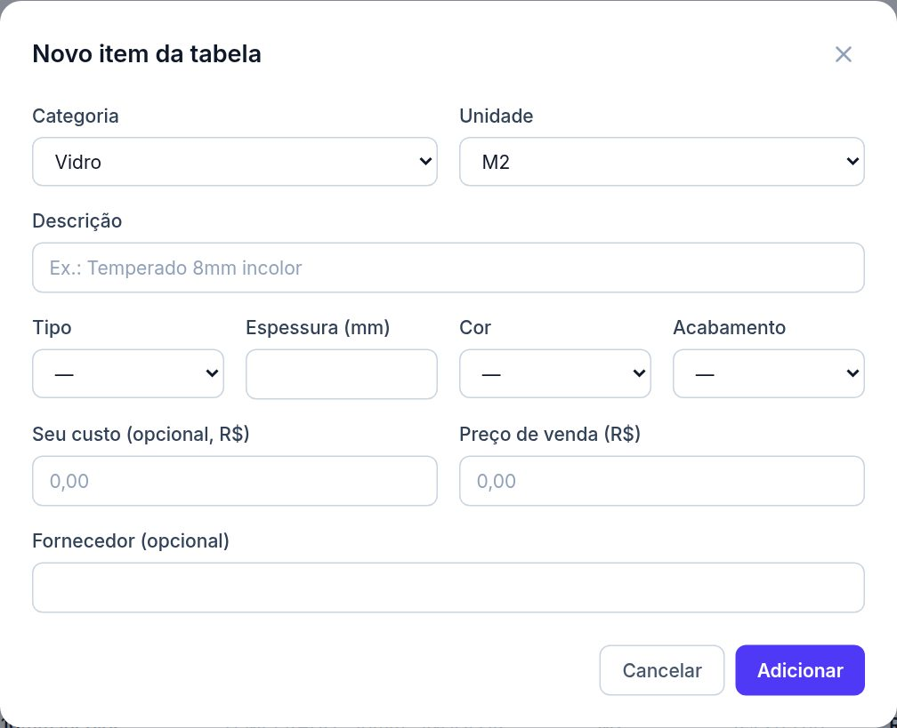
- Barra de progresso do assistente e a pergunta do passo.
- No topo da tabela: Configuração Expressa e Novo item.
- Colunas Especificação (tipo · espessura · cor), Unidade (m², kit, unidade…), Custo e Preço de venda.
- À direita de cada linha: lápis para editar e lixeira.
- Janela Novo item da tabela: categoria (vidro, ferragem, kit, mão de obra, deslocamento, outro), unidade e descrição. No vidro, também tipo, espessura, cor e acabamento. Embaixo, Seu custo (opcional), Preço de venda e fornecedor.
Para que serve: colocar os seus preços no sistema, para todo orçamento sair com o seu valor.
Como usar
- Abra Tabela de Preços e clique em Configuração Expressa.
- Diga se prefere informar o seu custo ou o seu preço de venda.
- Informe o m² do temperado 8 mm e 10 mm incolor, quanto cobra a mais por fumê, verde e bronze e, se quiser, o espelho 4 mm.
- Informe quanto cobra por um box frontal instalado: o sistema calcula dele o item “kit + mão de obra” e o coloca na tabela. Depois, visita, regime e margem.
- Complete em Novo item o que falta: laminado, comum, ferragens, kits, mão de obra, deslocamento.
Cadastre cada combinação que você vende: tipo, espessura e cor. Sem preço para “temperado 10 mm bronze”, por exemplo, o vidro fica fora do valor e o orçamento não sai.
O “kit + mão de obra” calibrado vai para a tabela, mas não entra sozinho no orçamento: adicione-o em cada box.
Preencha o Seu custo de cada item. É com ele que o sistema mostra a margem real quando você trabalha com preço de venda direto.
A tabela deixa de morar na cabeça do dono. Qualquer um da equipe monta orçamento com o preço certo, e as cores já saem calculadas pelo percentual que você definiu.
Responda “quanto fica?” antes de medir
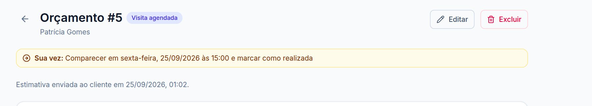
Olá, Patrícia! Pela descrição que recebemos, o seu serviço deve ficar entre R$ 495,00 e R$ 632,00. É uma estimativa sem compromisso: o valor exato sai depois da medição no local.
Se quiser seguir, responda esta mensagem que combinamos a visita.
- Botão Enviar estimativa, no rodapé do orçamento (veja a imagem 04-orcamento-calculo.jpg).
- Depois do envio: “Estimativa enviada ao cliente em…”, logo abaixo do título.
Para que serve: dar ao cliente uma faixa de preço com as medidas aproximadas, antes da visita.
Como usar
- Monte o orçamento com as medidas que o cliente passou.
- Clique em Enviar estimativa.
- Pronto: o cliente recebe “deve ficar entre R$ X e R$ Y”, sem compromisso, e o card vai para Pré-orçamento.
- Combine a medição pelo painel Medição quando ele responder.
A faixa vai, por padrão, de 10% abaixo a 15% acima do calculado. Costuma errar mais para um lado? Ajuste em Parâmetros de Cálculo.
Quem só queria saber o preço já tem a resposta, e você não gasta uma viagem medindo serviço que não ia fechar.
Nada sai para a obra sem conferência
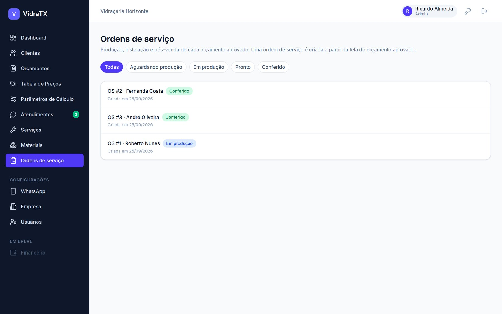
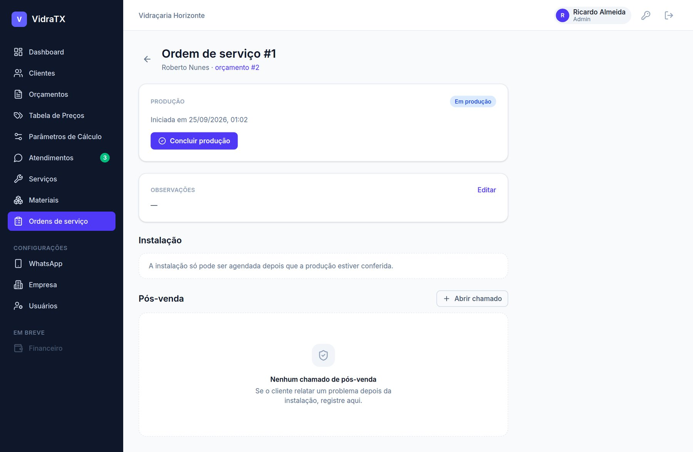
- Filtros: Todas · Aguardando produção · Em produção · Pronto · Conferido.
- Selo da etapa em cada OS.
- No painel Produção: a data de início e o botão da próxima etapa (Concluir produção).
- Painel Instalação: “só pode ser agendada depois que a produção estiver conferida”.
Para que serve: acompanhar cada serviço aprovado até a peça pronta e conferida.
Como usar
- Abra Ordens de serviço: a OS do orçamento aprovado já está lá.
- Clique em Iniciar produção quando o serviço entrar em produção.
- Clique em Concluir produção quando as peças ficarem prontas.
- Confira as peças e clique em Conferir produção.
- Marque que a OS não passa por produção quando for só instalação.
Confira medida, espessura e acabamento contra as peças de corte do orçamento antes de clicar em Conferir. É esse clique que libera o agendamento da instalação.
Acabou o “o vidro já ficou pronto?”. Todo mundo vê a etapa de cada serviço. E a instalação só é marcada com a peça conferida: menos viagem perdida e menos retrabalho na obra.
Equipe certa, no dia combinado com o cliente
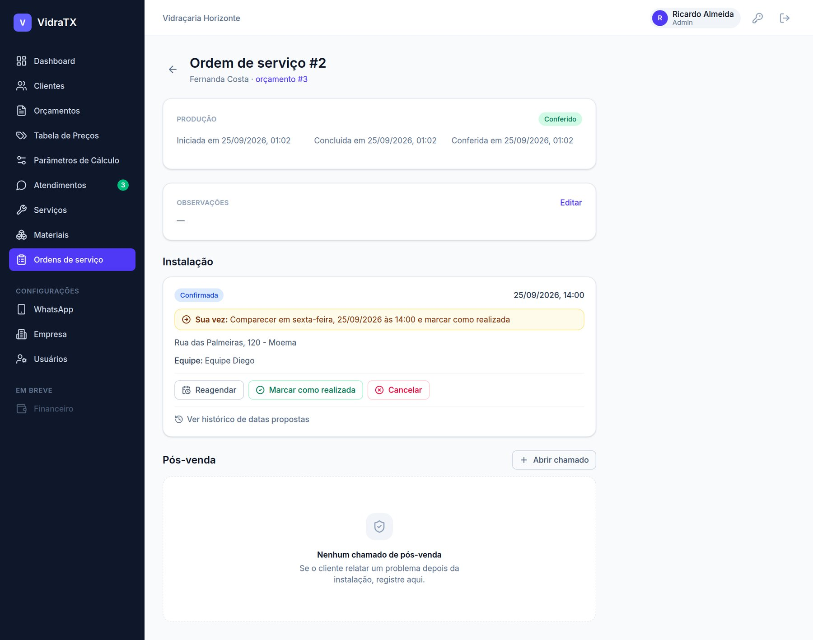
- Selo Confirmada e a data da instalação.
- Faixa “Sua vez”: comparecer e marcar como realizada.
- Endereço e Equipe responsável.
- Botões Reagendar · Marcar como realizada · Cancelar e o histórico de datas.
Para que serve: marcar a instalação com o cliente pelo WhatsApp e registrar quando ela foi feita.
Como usar
- Abra o painel Instalação da OS com a produção conferida.
- Escolha data e hora, a equipe (ex.: “João e Pedro”) e clique em Enviar proposta.
- Responda se o cliente sugerir outra data.
- Clique em Marcar como realizada no dia, preenchendo o checklist.
- Pronto: o cliente recebe “Instalação concluída!” com um agradecimento.
Preencha sempre a equipe. Duas equipes podem instalar no mesmo horário; a mesma equipe, não. O sistema segura o conflito.
O cliente confirma por escrito, a equipe sabe onde estar e você vê as instalações da semana na Visão geral.
Pós-venda com começo, meio e fim
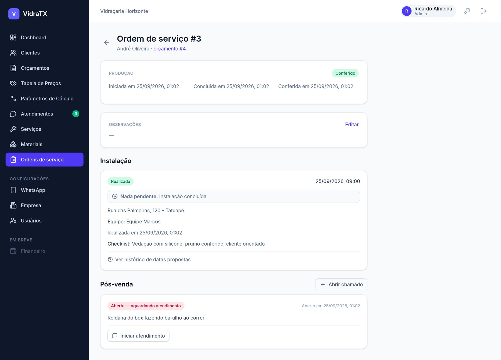
- Instalação Realizada, com a data e o Checklist registrado.
- Botão Abrir chamado, no painel Pós-venda.
- Chamado “Aberta — aguardando atendimento”, com o problema relatado.
- Botão Iniciar atendimento.
Para que serve: registrar o problema relatado depois da instalação e como foi resolvido.
Como usar
- Abra a OS do serviço e clique em Abrir chamado.
- Descreva o problema relatado pelo cliente.
- Clique em Iniciar atendimento e anote como foi feito.
- Registre a solução.
- Clique em Encerrar chamado.
Anote a solução com detalhe (regulagem de roldana, troca de vedação…). Na próxima reclamação parecida, a resposta já está escrita.
Reclamação não se perde em conversa. O histórico fica na OS do serviço, junto com a produção e a instalação.
A história de cada cliente num clique
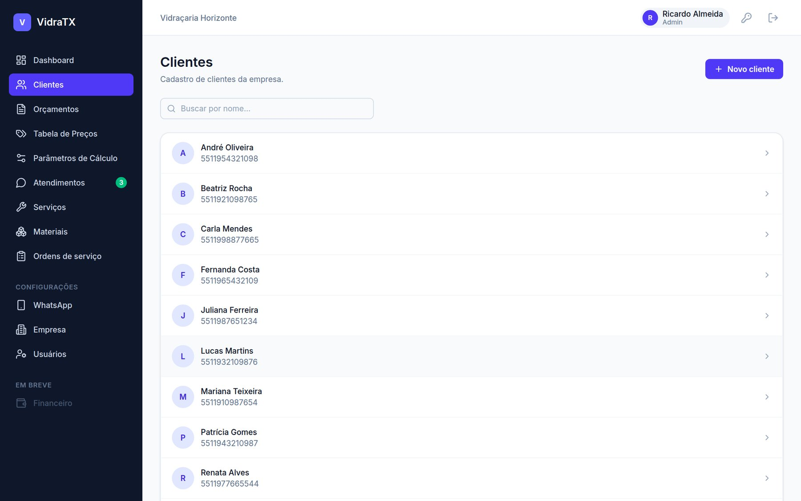
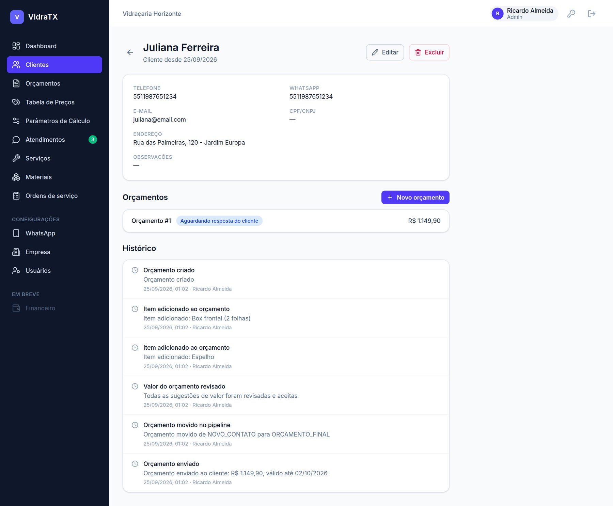
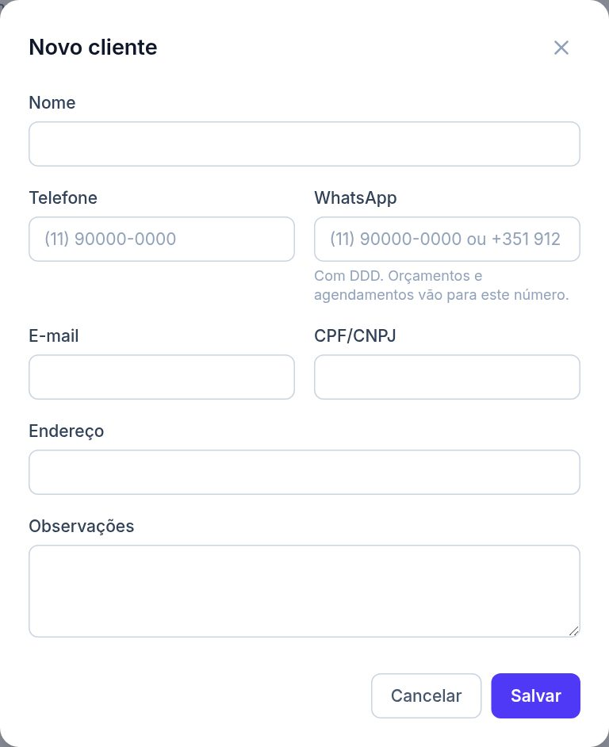
- No topo: busca por nome e Novo cliente.
- Na ficha: telefone, WhatsApp, e-mail, CPF/CNPJ, endereço e observações.
- Orçamentos do cliente, com a situação e o valor, e o botão Novo orçamento.
- Histórico: cada passo, com data, hora e quem fez.
- Janela Novo cliente: só o nome é obrigatório. O WhatsApp, com DDD, é para onde vão orçamentos e agendamentos.
Para que serve: guardar contato, orçamentos e tudo o que aconteceu com cada cliente.
Como usar
- Busque o cliente pelo nome em Clientes.
- Cadastre um novo em Novo cliente. O WhatsApp, com DDD, é para onde vão orçamentos e agendamentos.
- Abra a ficha para ver orçamentos e histórico.
- Crie um orçamento direto da ficha, em Novo orçamento.
Quem chega pelo WhatsApp já entra cadastrado, com nome e número. Complete depois o endereço e o CPF/CNPJ.
Cliente antigo ligou? Você abre a ficha e sabe o que foi orçado, o valor e em que pé ficou.
Sua margem protegida em todo orçamento
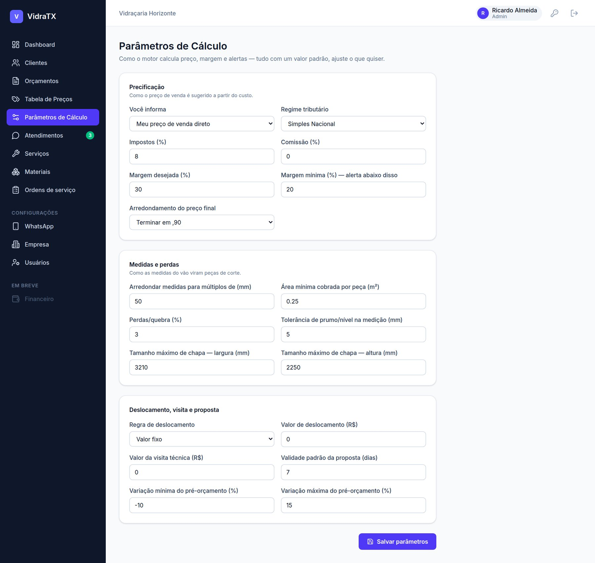
- “Você informa”: Meu preço de venda direto ou o seu custo. Ao lado, o regime tributário.
- Impostos, comissão, margem desejada e margem mínima.
- Arredondamento do preço final (ex.: terminar em ,90).
- Medidas e perdas: múltiplo de corte, área mínima, perdas/quebra, tamanho máximo da chapa.
- Deslocamento, visita técnica, validade da proposta e faixa da estimativa. Embaixo, Salvar parâmetros.
Para que serve: ensinar ao sistema como você forma preço, para ele calcular do seu jeito.
Como usar
- Escolha se informa o custo (o sistema sugere a venda) ou o preço de venda direto.
- Preencha impostos, comissão, margem desejada e margem mínima.
- Defina o arredondamento do preço final.
- Ajuste medidas e perdas: múltiplo de corte, área mínima por peça, % de quebra e tamanho máximo da chapa.
- Salve depois de definir visita, validade padrão e faixa da estimativa.
A área mínima (padrão 0,25 m²) evita vender espelho pequeno ou prateleira no prejuízo. E margem é sobre a venda, não markup: 25% de margem não é “custo + 25%”.
A margem real aparece em cada orçamento: verde quando está boa, amarela abaixo da desejada, vermelha abaixo da mínima. Desconto demais? O sistema avisa antes de você enviar.
Com “Meu preço de venda direto”, a margem é calculada sobre o Seu custo da Tabela de Preços: preencha o custo dos itens que você usa (vidros, kits, mão de obra). Um componente com valor digitado à mão não tem custo cadastrado e, com ele no orçamento, a margem não aparece.
Mensagem automática só em horário comercial
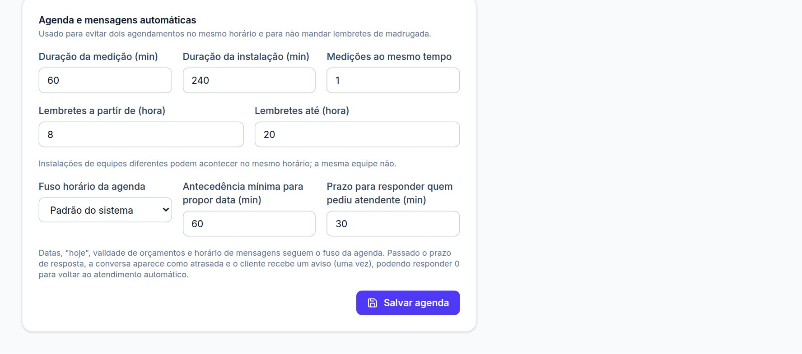
- Duração da medição e da instalação, e quantas medições ao mesmo tempo.
- Lembretes a partir de / até (hora).
- Fuso horário, antecedência mínima para propor data e prazo para responder quem pediu atendente.
- Botão Salvar agenda.
Para que serve: dizer ao sistema como é a sua agenda e em que horário ele pode mandar mensagem automática.
Como usar
- Informe quanto dura uma medição e uma instalação.
- Diga quantas medições a empresa faz ao mesmo tempo.
- Defina o horário dos lembretes (ex.: das 8h às 18h) e o fuso horário.
- Defina a antecedência mínima para propor uma data.
- Salve depois de definir o prazo para responder quem pediu atendente.
Lembretes e avisos respeitam esse horário. As respostas do atendimento automático, não: cliente que chama à noite é respondido na hora.
O cliente não recebe cobrança às 23h, e a agenda não marca mais visitas no mesmo horário do que a empresa dá conta.
Cada um da equipe com o seu acesso
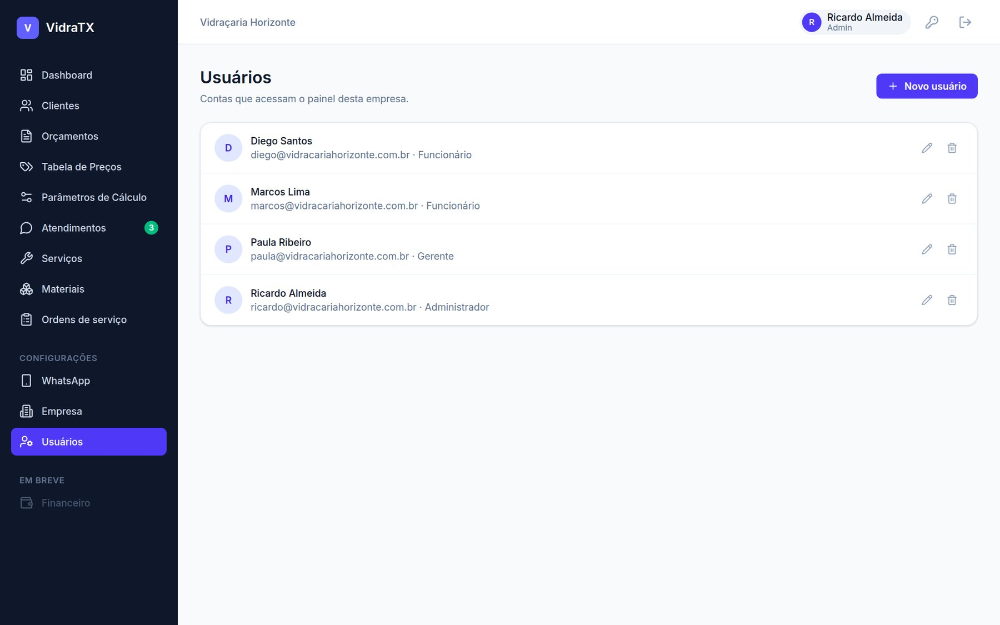
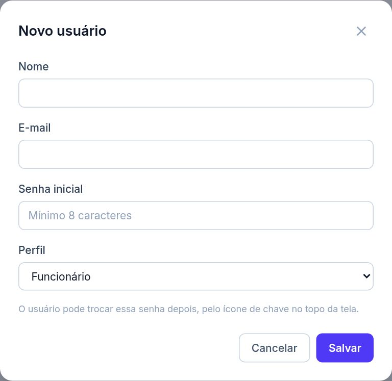
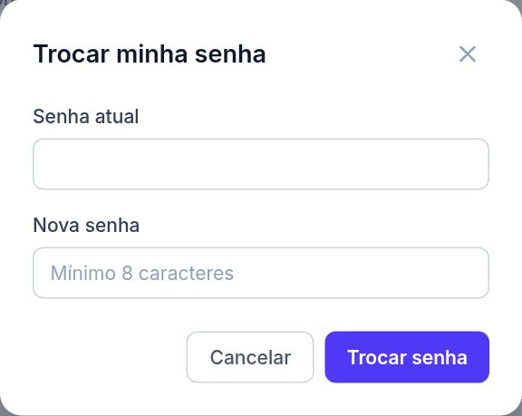
- Botão Novo usuário, no topo à direita.
- Cada pessoa com nome, e-mail e perfil (Administrador, Gerente, Funcionário).
- À direita: lápis para editar (inclusive desativar) e lixeira.
- Janela Novo usuário: nome, e-mail, senha inicial e perfil.
- Trocar minha senha: qualquer pessoa, em qualquer perfil, troca a própria senha pelo ícone de chave no topo da tela, informando a senha atual e a nova.
Para que serve: dar a cada pessoa o próprio login, com o acesso certo para a função.
Como usar
- Clique em Novo usuário.
- Informe nome, e-mail e uma senha inicial (mínimo de 8 caracteres).
- Escolha o perfil: Administrador, Gerente ou Funcionário.
- Salve. A pessoa entra com o identificador da empresa, o e-mail e a senha.
- Peça que ela troque a senha inicial no primeiro acesso, pelo ícone de chave.
- Desmarque “Usuário ativo” quando alguém sair da empresa.
| Perfil | O que pode |
|---|---|
| Administrador | Tudo, inclusive usuários e dados da empresa. |
| Gerente | Tudo do Funcionário, mais preços, desconto, Tabela de Preços, Parâmetros, produção, WhatsApp e agenda. |
| Funcionário | Clientes, orçamentos, atendimentos, medições, instalações e pós-venda. Não mexe em preço. |
Vendedor e medidor como Funcionário: montam orçamento e agenda, e desconto e preço final ficam com o gerente.
Ninguém usa a senha do dono, e o histórico mostra quem fez cada coisa.
O nome da sua vidraçaria em cada mensagem
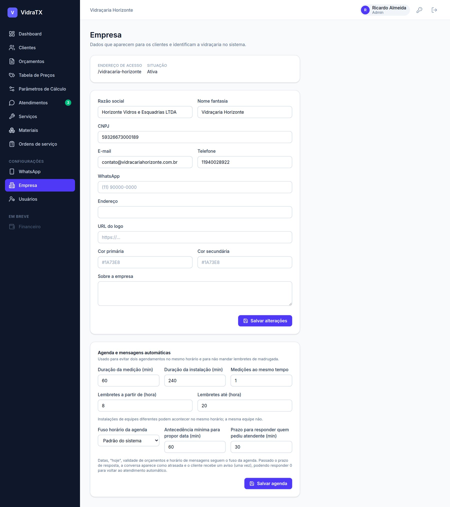
- No topo: endereço de acesso (o identificador da empresa) e a situação.
- Razão social, nome fantasia, CNPJ, e-mail, telefone, WhatsApp e endereço.
- Botão Salvar alterações. Mais abaixo fica o painel Agenda (seção 17).
Para que serve: guardar os dados da vidraçaria. O nome fantasia assina as mensagens de orçamento.
Como usar
- Abra Configurações › Empresa.
- Confira os dados da vidraçaria.
- Clique em Salvar alterações.
Use no nome fantasia o nome que o cliente conhece: é ele que aparece em “Segue o seu orçamento nº… da [sua vidraçaria]”.
O cliente reconhece de onde vem a mensagem.
Os serviços que a vidraçaria oferece
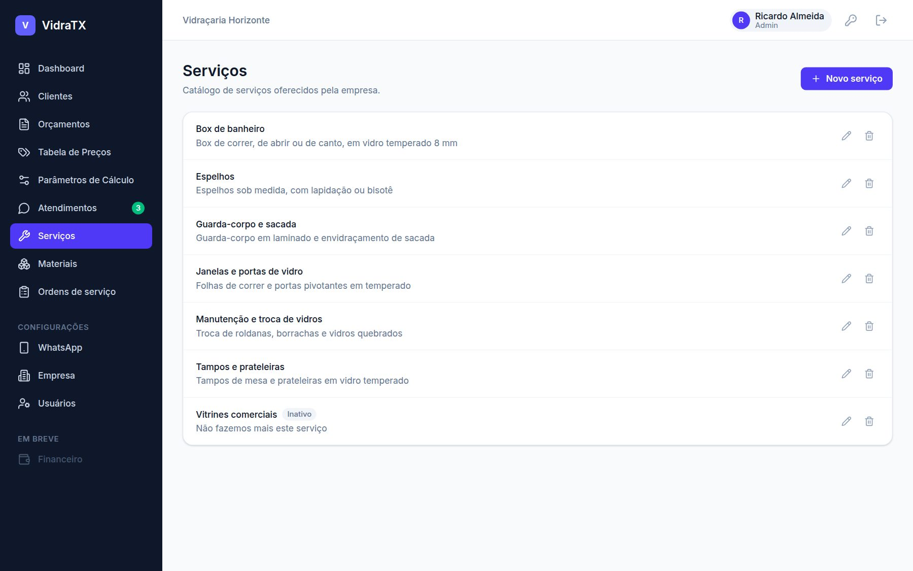
- Botão Novo serviço, no topo à direita (Gerente e Administrador).
- Cada serviço com nome e descrição, em ordem alfabética.
- A etiqueta Inativo marca o serviço que a vidraçaria deixou de fazer.
- À direita: lápis para editar e lixeira para excluir.
Para que serve: manter num lugar só a lista do que a vidraçaria faz, com os nomes que a equipe usa.
Bom saber: o catálogo é de consulta. O orçamento é montado pela tipologia e pela Tabela de Preços, e o atendimento automático não mostra esta lista ao cliente.
Como usar
- Abra Serviços no menu.
- Clique em Novo serviço e informe o nome e, se quiser, uma descrição.
- Edite pelo lápis e desmarque “Serviço ativo” quando parar de oferecer um serviço: ele fica na lista, marcado como Inativo.
- Exclua pela lixeira só o que foi cadastrado por engano. A exclusão não pode ser desfeita.
Use os nomes que o cliente usa no WhatsApp: “box de banheiro”, “espelho”, “troca de vidro”. Assim a equipe fala a mesma língua do cliente.
Quem entra na equipe vê de uma vez o que a vidraçaria faz e o que deixou de fazer.
Os materiais da produção
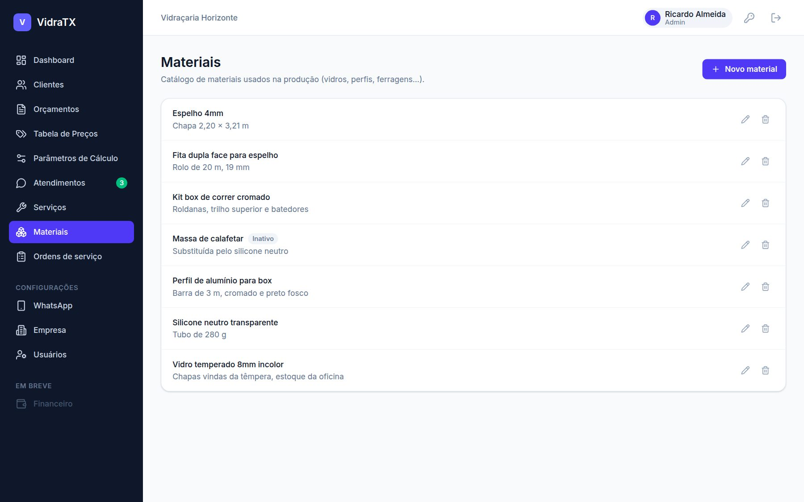
- Botão Novo material, no topo à direita (Gerente e Administrador).
- Cada material com nome e descrição (medida da chapa, embalagem, acabamento).
- A etiqueta Inativo marca o material que a oficina não usa mais.
- À direita: lápis para editar e lixeira para excluir.
Para que serve: registrar, com nomes padronizados, o que a oficina usa para produzir.
Bom saber: o catálogo é de consulta. Ele não controla estoque, não entra na ordem de serviço e não muda nenhum preço: o preço de vidro, kit e ferragem vem da Tabela de Preços.
Como usar
- Abra Materiais no menu.
- Clique em Novo material e informe o nome e, se quiser, uma descrição.
- Edite pelo lápis e desmarque “Material ativo” quando a oficina deixar de usar um material.
- Exclua pela lixeira só o que foi cadastrado por engano. A exclusão não pode ser desfeita.
Anote na descrição o que o montador procura: a medida da chapa, a cor do perfil, o tamanho do tubo de silicone.
O nome do material é o mesmo para quem compra, quem corta e quem instala.
Um serviço do começo ao fim
As etapas que o VidraTX cobre, e a tela de cada uma.
- Antes: o pedido chega O cliente chama no WhatsApp. O atendimento automático cadastra, coleta o pedido e cria a solicitação. Se quiser, mande uma estimativa de preço. Atendimentos · Visão geral › Próximas ações › Criar orçamento · Orçamento › Enviar estimativa
- Medição Proposta de data pelo WhatsApp, confirmação do cliente e registro da visita realizada. Orçamento › painel Medição
- Orçamento Itens por tipologia, peças de corte, custo, margem e revisão do gerente. Orçamento › Itens e cálculo · Orçamentos (funil)
- Aprovação Envio pelo WhatsApp. O cliente responde “1” (ou você marca como aprovado) e a ordem de serviço é aberta sozinha. Orçamento › Enviar orçamento pelo WhatsApp
- Produção Aguardando produção › Em produção › Pronto › Conferido. Ordens de serviço › painel Produção
- Instalação Proposta de data com equipe, confirmação do cliente, checklist e mensagem de conclusão. Ordem de serviço › painel Instalação
- Depois: pós-venda Chamado aberto, atendido, resolvido e encerrado. Ordem de serviço › painel Pós-venda
Perguntas frequentes
Funciona no celular?
Sim, pelo navegador do celular. Não precisa instalar aplicativo. Na tela pequena, o menu fica recolhido no botão ☰ do topo.
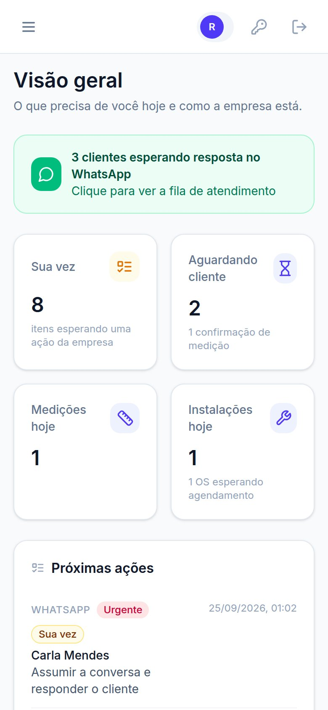
Meus dados ficam seguros?
Cada vidraçaria só enxerga os próprios dados. As senhas são guardadas criptografadas. Depois de várias senhas erradas seguidas, o login é bloqueado por alguns minutos.
Os perfis limitam quem mexe em preço. O acesso é por conexão segura (HTTPS), com cópia de segurança diária do banco.
Minha equipe consegue usar?
Cada tela faz uma coisa, e os botões dizem a ação: “Enviar proposta”, “Marcar como realizada”. A Visão geral mostra de quem é a vez em cada item.
Cada pessoa tem o seu login, e o Funcionário não consegue mexer em preço por engano.
Preciso trocar meu número de WhatsApp?
Não. Você conecta o número atual como “aparelho conectado”, e ele continua funcionando no celular. Mantenha o celular com internet: se ficar 14 dias sem uso, o WhatsApp desconecta os aparelhos conectados.
A conexão é a mesma do WhatsApp Web, não a API oficial da Meta. Use para atender os seus clientes, nunca para disparo em massa.
E se o WhatsApp desconectar?
As mensagens ficam na fila e saem sozinhas quando ele reconectar. O painel avisa em Configurações › WhatsApp e na Visão geral.
A equipe do VidraTX também recebe um alerta.
O robô pode responder errado para o meu cliente?
Quando não entende, ele pergunta de novo. Continuou sem entender, passa para uma pessoa. O cliente pode pedir atendente a qualquer momento, e você assume a conversa quando quiser.
E o robô não inventa preço: orçamento e estimativa só saem quando alguém da equipe clica para enviar.
O que é o “Financeiro” que aparece no menu como “Em breve”?
É uma área que ainda não está disponível: o item aparece no fim do menu, desativado, e não abre nenhuma tela. Hoje o painel não registra recebimentos nem parcelas pagas. O valor combinado com o cliente fica no orçamento aprovado.
Eu trabalho com preço de custo. Serve?
Serve. Escolha “Meu custo” e o sistema sugere o preço de venda com impostos, comissão e margem. Prefere informar o preço de venda direto? Também dá.
Como começo?
Chame no WhatsApp e peça o teste grátis de 14 dias. Você recebe o acesso da sua vidraçaria e segue os Primeiros passos.
Teste o VidraTX por 14 dias, grátis
Conecte o seu WhatsApp, monte a sua tabela e mande o seu primeiro orçamento para aprovação.
Sem calculadora, sem planilha, sem cobrar cliente por ligação.
Quero testar grátisWhatsApp: +55 11 96309-1578
Anexo A · Painel do operador VidraTX
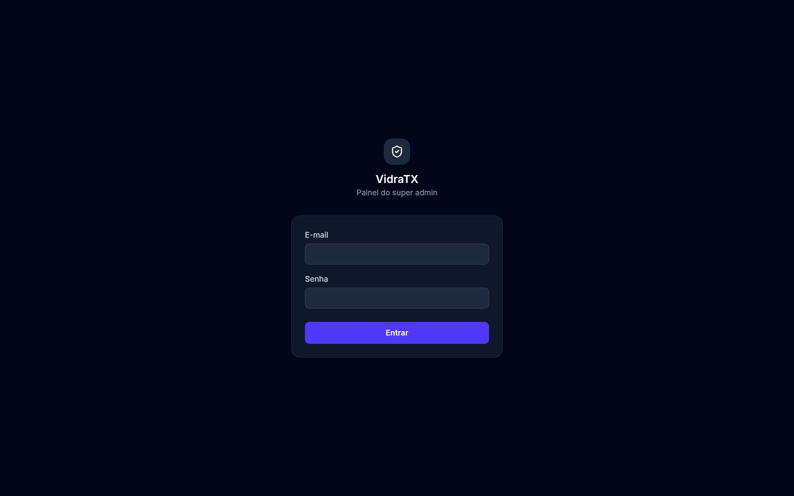
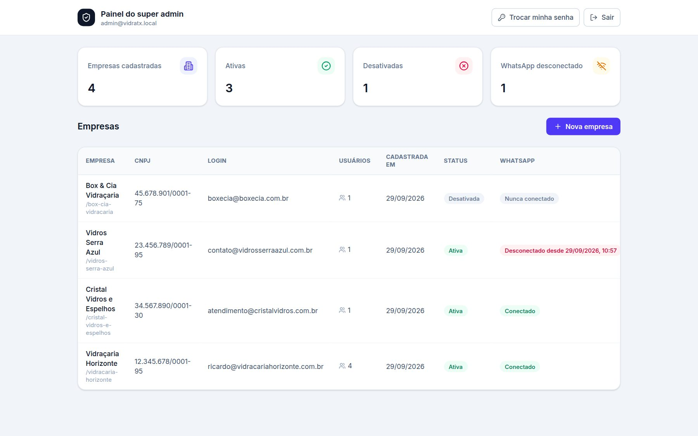
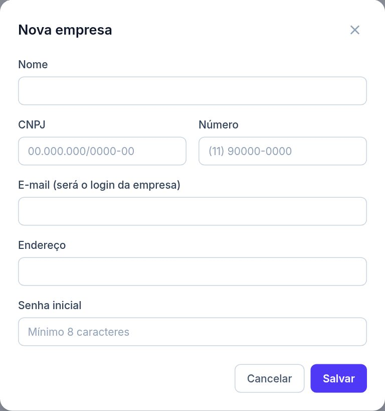
- Entrada só com e-mail e senha: o operador não pertence a nenhuma vidraçaria.
- Resumo: empresas cadastradas, ativas, desativadas e com o WhatsApp desconectado.
- Cada empresa com nome e identificador (ex.:
/vidracaria-horizonte), CNPJ, login, número de usuários, data de cadastro, status e WhatsApp: Conectado, Desconectado desde… ou Nunca conectado. - À direita de cada linha: editar, redefinir a senha do login da empresa e ativar ou desativar.
- Janela Nova empresa: nome, CNPJ, número, e-mail (vira o login do administrador da vidraçaria), endereço e senha inicial.
Para que serve: criar o acesso de cada vidraçaria, acompanhar o WhatsApp de todas e suspender o acesso quando for preciso.
Como usar
- Entre em
/superadmin/logincom o e-mail e a senha do operador. - Clique em Nova empresa e preencha todos os campos. O CNPJ precisa ser válido e não pode estar em outra empresa. O identificador é gerado a partir do nome.
- Passe para a vidraçaria o endereço
/entrar, o identificador (sem a barra), o e-mail e a senha inicial. - Redefina a senha pelo ícone da linha quando o administrador da vidraçaria esquecer a dele.
- Desative a empresa para suspender o acesso (por exemplo, no fim do teste): ninguém dela entra no painel até ela ser ativada de novo. Os dados continuam guardados.
Olhe todo dia o cartão WhatsApp desconectado. Enquanto o WhatsApp de uma vidraçaria está fora, os clientes dela ficam sem resposta automática e as mensagens da equipe esperam na fila até ele voltar.